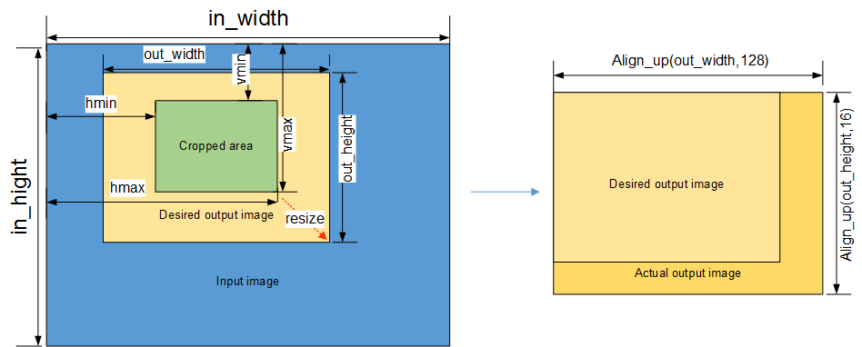

CMDLIST
It is not recommended to use the CMDLIST. CMDLIST is an extended function of the VPC. It combines the multiple times of VPC startup into one whole process of"startup" and "complete interrupt return". To put it in an easier way, CMDLIST applies to scenarios with low requirements on delay, low resolution of images, and a large number of images.
Input Parameter
The CMDLIST input is a structure. For details about the parameters, see Figure 1 and Table 1.

For details about the descriptions and value ranges, see Table 1.
Table 1 Structure description
For details, see Table 1. |
||
Bit depth, usually 8 bits. 10 bits are used only when the image format is YUV/YVU420 semi-planar and HFBC compression is used. |
||
Input image channel. Generally, this parameter is set to 1 and the CVDR channel is used. The RDMA channel is used only when the HFBC data output by the VDEC is used as the input. |
||
YUV400sp, YUV420sp, YUV422sp, and YUV444sp: The width is 128-pixel aligned. YUV422Packed: The result of width x 2 is 128-pixel aligned. YUV444Packed and RGB888: The value of width x 3 is 128-pixel aligned. |
||
Reserved for internal debugging. Generally, this parameter is set to 0. |
||
Pointer to the address of the input image buffer, which is a union. For common uncompressed images, bare_buffer is selected, which must be 128-byte aligned. For HFBC-compressed images, hfbc_buffer is selected. |
RDMACHANNEL in this syntax is the same as that in vpc_in_msg. For details, see RDMACHANNEL. |
|
For details, see ROI_CONFIG. |
||
Pointer to the next IMAGE_CONFIG structure. Set this parameter when multiple images are used. Otherwise, set this parameter to NULL. |
NOTE:
For details about the structure syntax, see include/inc/dvpp/dvpp_config.h in the DDK.
You can learn about the input parameters by referring to Figure 2.
Figure 2 Example of input parameters

This figure shows the normalization of the crop and resize operations.
- When only cropping is performed, the resizing coefficient is 1.
- When only resizing is performed, the cropping size is the original image.
- The width of the input image is 128-pixel aligned, the height of the input image is 16-pixel aligned, and the maximum resolutions of the input and output images are both 4 KB.
- The following interfaces are required for memory address alignment:
- The memory addresses of the input and output images must be both 128-byte aligned. The addresses must be in the same 4 GB space. The huge page memory of HIAI_DMalloc is required for allocation.
- Allocation interface: HIAI_DMalloc(size, MALLOC_DEFAULT_TIME_OUT, HIAI_MEMORY_HUGE_PAGE)
- The scaling coefficient calculated based on the ratio of the output image to the cropped image must be within the range of [0.03125, 4].
- The output buffer size must be calculated based on the output image resolution with the 128-pixel aligned width and 16-pixel aligned height.
- When the CMDLIST interface is called once, a maximum of 32 images are supported, and each image supports a maximum of 256 ROIs.
Output Parameter
None. The output image is in out_buffer of sum_out. You can obtain the image by reading the buffer.
Table 1 shows the rank configuration table for the input and output image formats.
Calling Example
/************************************************************************************************/
/***** Example description: **********************************************************************************
This example uses a 1920 x 1088 YUV420 NV12 image as the input.
File name of the input image: "file1_1920x1088_nv12.yuv"
Operations on the input image: Crop five sub-images and scale them to 224 x 224.
************************************************************************************************
************************************************************************************************/
int main()
{
int ret = 0;
// Read the input file.
char image_file[128] = "file1_1920x1088_nv12.yuv";
ifstream in_stream(image_file);
if (!in_stream.is_open()) {
printf("can not open %s.\n", image_file);
return -1;
}
in_stream.seekg(0, ios::end);
int file_len = in_stream.tellg();
char* in_buffer = (char *)HIAI_DMalloc(file_len, MALLOC_DEFAULT_TIME_OUT, HIAI_MEMORY_HUGE_PAGE);
in_stream.seekg(0, ios::beg);
in_stream.read(in_buffer, file_len);
in_stream.close();
// Start to add the configuration of the first image.
IMAGE_CONFIG* image_config = (IMAGE_CONFIG*)malloc(sizeof(IMAGE_CONFIG));
image_config->in_buffer.bare_buffer = in_buffer; // Currently, uncompressed images are used.
image_config->format = 0;
image_config->rank = 1;// When the input is in NV12 format, the output is also in NV12 format. The parameter rank is set to 1.
image_config->bitwidth = 8;// Currently, only 8 bits are used.
image_config->in_width = 1920;
image_config->in_height = 1088;
image_config->width_step = 1920;// The value is the same as the width.
// Start to add the configuration of the first cropped image. In this example, the cropping area is the enclosed area based on (0,0) and (511,511).
ROI_CONFIG* roi_config = &image_config->roi_config;
// Start to configure the crop parameters.
roi_config->crop_config.enable = 1; // Note: If only resizing is required, set this parameter to 0.
roi_config->crop_config.hmin = 0;
roi_config->crop_config.hmax = 511;
roi_config->crop_config.vmin = 0;
roi_config->crop_config.vmax = 511;
// Start to configure output channel parameters.
roi_config->sum_out.enable = 1; // Enable the output of the first channel.
roi_config->sum_out.out_width = 224;
roi_config->sum_out.out_height = 224;
int out_buffer_size = AlignUp(224,128)*AlignUp(224,16)*3/2;
roi_config->sum_out.out_buffer = (char*)HIAI_DMalloc(out_buffer_size, MALLOC_DEFAULT_TIME_OUT, HIAI_MEMORY_HUGE_PAGE);
ROI_CONFIG* last_roi = roi_config;
// Start to add the configurations of the second to fifth cropped images.
for (int i = 0 ; i < 4; i++) {
ROI_CONFIG* roi_config = (ROI_CONFIG*)malloc(sizeof(ROI_CONFIG));
// Start to configure the crop parameters.
roi_config->crop_config.enable = 1;
roi_config->crop_config.hmin = 100*i;
roi_config->crop_config.hmax = 299 + 100*i;
roi_config->crop_config.vmin = 100*i;
roi_config->crop_config.vmax = 299 + 100*i;
// Start to configure output channel parameters.
roi_config->sum_out.enable = 1;
roi_config->sum_out.out_width = 224;
roi_config->sum_out.out_height = 224;
out_buffer_size = AlignUp(224,128)*AlignUp(224,16)*3/2;
roi_config->sum_out.out_buffer = (char*)HIAI_DMalloc(out_buffer_size, MALLOC_DEFAULT_TIME_OUT, HIAI_MEMORY_HUGE_PAGE);
roi_config->next = nullptr;
last_roi->next = roi_config;
last_roi = roi_config;
}
// Start to call the CMDLIST interface of the DVPP.
IDVPPAPI *pidvppapi = NULL;
// Call the createdvppapi interface only once, regradless of the subsequent callings.
ret = CreateDvppApi(pidvppapi);
if (ret != 0) {
printf("creat dvpp api faild!\n");
return -1;
}
dvppapi_ctl_msg dvppApiCtlMsg;
dvppApiCtlMsg.in = (void *)(image_config);
dvppApiCtlMsg.in_size = sizeof(IMAGE_CONFIG);
ret = DvppCtl(pidvppapi, DVPP_CTL_CMDLIST_PROC, &dvppApiCtlMsg);
if (0 != ret) {
printf("call cmdlist dvppctl process faild!\n");
} else {
printf("cmdlist success.\n");
}
ret += DestroyDvppApi(pidvppapi);
roi_config = image_config->roi_config.next;
while (roi_config != nullptr) {
ROI_CONFIG* next_roi = roi_config->next;
UNMAP(roi_config->sum_out.out_buffer, out_buffer_size);
free(roi_config);
roi_config = next_roi;
}
UNMAP(image_config->roi_config.sum_out.out_buffer, out_buffer_size);
free(image_config);
UNMAP(in_buffer, file_len);
return ret;
}